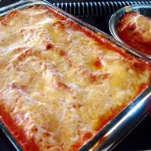

Cannelloni recipe

Description
This meat cannelloni is best made with fresh noodles. You can substitute one pound of cannelloni pasta cooked according to package directions, then proceed as directed.
Ingredients
- Onion
- Celery
- Carrot
- OLive oil
- Garlic
- Veal
- Pork
- Ground beef
- White wine
- Broth
- Pasta sheets
Steps
- Heat olive oil. Add onion, celery, carrot, garlic and meat.
- Add wine and seasonings.
- Make the sauce.
- Preheat the oven.
- Bake.
Go back.